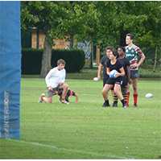
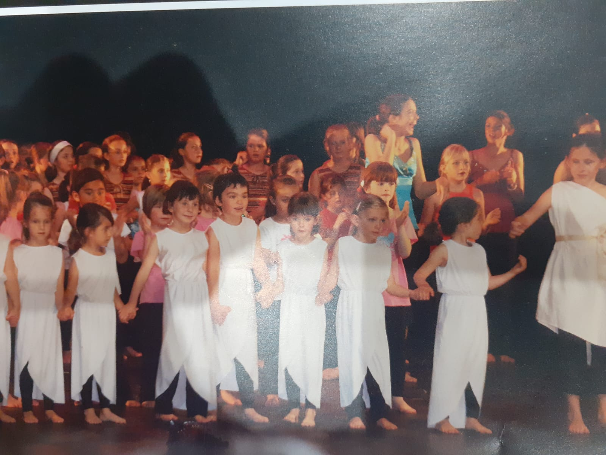

I practiced a lot of hobbies in my childhood.
First, I danse for 10 years and I think it helped me develop my body language and it also allowed me to learn to live in the moment.
Indeed, when you dance you have to be focused on the emotion you want to convey and on the rhythm of the music. you can't be distracted by anything.
Thereafter, I practiced rugby for 3 years and unfortunately had to quit following an injury. Despite this, rugby taught me team spirit and surpassing onself.
Because I was in a team made up of 49 boys and therefore I was the only girl.
I had to learn to stand out because a girl can seem weaker than the boysn and I had to learn to cooperate with each of them.
Moreover, when I have time, i draw to continue to develop my creativity and I play pinao which develops my rigor because without that it is impossible to play correctly a piece.

